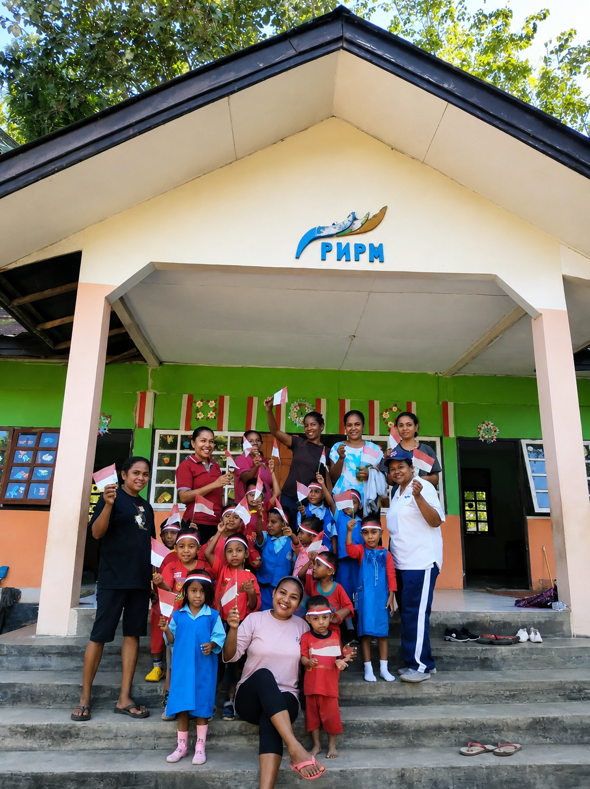

Tentang Kami
KOBER MASANG MOLA ini berada di bawah naungan Yayasan Masyarakat Welai Timur, sebuah yayasan yang telah berdiri sejak tahun 1992 dan memiliki peran dalam mendukung pendidikan masyarakat setempat.

KETERANGAN & data dasar PAUD Masang Mola.
Jl.Tamukung Atallo, Kelurahan Welai Timur, Kecamatan Teluk Mutiara, Kabupaten Alor, NTT. Kode Pos 85817
- Nomor Pendirian Yayasan: KWT.01/VIII/1992
- NPSN: 69793916
- Kontak: +123 456 7890
- Kota: Mola, Kab.Alor
- Jenjang: KB (Kelompok Bermain)
- Pengelola: Satriani D. Mapada, S.Kep
- Email: email@example.com
- Status: Swasta
Peran di Tengah Masyarakat Sebagai lembaga PAUD, Masang Mola berfungsi sebagai tempat anak-anak usia dini memperoleh pengalaman belajar pertama sebelum memasuki jenjang Sekolah Dasar.
Skills Guru
Selain mengenalkan huruf dan angka, PAUD juga membantu perkembangan:
Visi
Necessitatibus eius consequatur ex aliquid fuga eum quidem sint consectetur velit
Misi
Necessitatibus eius consequatur ex aliquid fuga eum quidem sint consectetur velit
Jumlas siswa
Jumlah Pegawai
Jumla ruangan
Rangking PAUD
Testimonials
Necessitatibus eius consequatur ex aliquid fuga eum quidem sint consectetur velit

Jaffray Atafani(Alumi 2005)
Polsuspas & PNS
Taman bermain yang aman dan nyaman, dialtih oleh guru-guru yang hebat.

Ellen Atakari, S.Kep(Alumi 2000)
Bidan RSUD Kalabahi
Paud Mola adalah tempat yang tepat bagi anak-anak dibawah umur 5 Tahun Menimbah Ilmu. saya kagum dengan cara guru-Guru yang mudah menarik dan mengendalikan perhatian anak-anak

Joe Atapelang (Orang Tua Murid)
Wirausaha
PAUD mola bukan hanya sekedar Kelompok bermain anak-anak, ini adalah salah satu karakter dan kemandirian anak dibentuk.